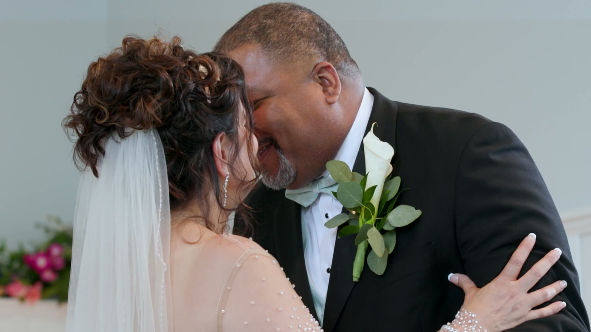
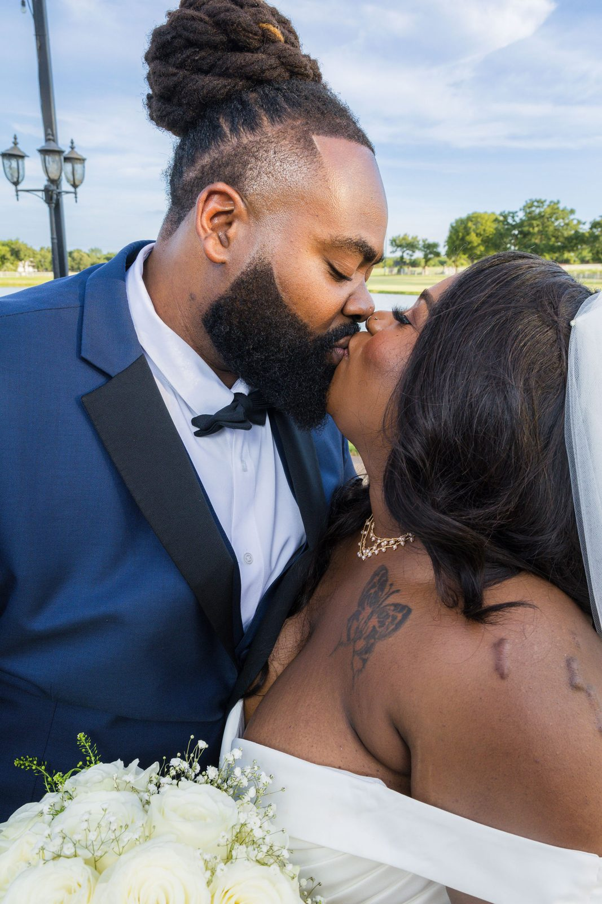

Nashville weddingvideographer. Films you will rewatch.
Leo Operations films weddings across Nashville and Middle Tennessee in 4K. Your highlight film runs five to seven minutes, color graded, with enhanced audio and licensed music, and it arrives within 14 business days.
What your wedding film includes
Coverage up to eight consecutive hours, from getting ready through the send-off. Two camera professionals, with a third added when your timeline needs it. Drone exteriors when the weather allows. A five to seven minute highlight film with color grading, audio enhancement and licensed music, delivered within 14 business days.
Photo and film from one team
Book video alone or add photography from the same coordinated team. On combined bookings the two camera professionals are one photographer and one videographer who plan together, so nobody walks through the other's shot during the vows. Edited photos arrive within three business days.
A planning call, a shot list, a timeline
Before the day, we sit down with you (and whoever is helping plan) and build a written shot list and timeline: the family combinations, the cultural moments, the speeches, the songs. On the day, nothing important depends on someone remembering.
Every tradition, filmed with care
We have filmed Somali, Nigerian, Muslim and Christian weddings, church ceremonies and lakeside vows. We learn the order of your traditions before the day so we are in the right spot for each one. We are based in Nashville, film across Brentwood, Franklin and Murfreesboro, and travel for weddings in other states.
Everythingyou need.
Our weddingfilms.




Questions, answered.
How much is a wedding videographer in Nashville?
Wedding film is priced by hours, crew and deliverables. Send your date, venue and guest count and we will send a written quote. For national market ranges, see our wedding videographer cost guide.
How long is the highlight film?
Five to seven minutes, color graded, with enhanced audio and licensed music.
When will we get our wedding film?
Your highlight film is delivered within 14 business days. If you also book photography, edited photos arrive within three business days.
Do you use a drone?
Yes, for exterior footage when the weather and the venue allow it.
Can we book photography and video together?
Yes. One coordinated team covers both, which keeps the day calmer and the coverage complete.
Do you film weddings outside Nashville?
Yes. We film across Middle Tennessee and travel to other states.
How do we check availability?
Email us or call (773) 573-2135 with your date, venue and guest count.
Let’s make itunforgettable.
Tell us the date, the place and what you need. We will tell you how we would cover it.
Email Leo Operations →